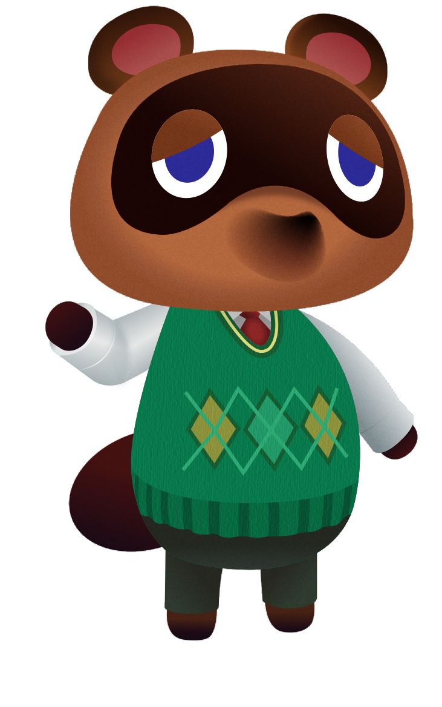

overview

동물의숲 너굴
닌텐도 게임 <동물의숲>의 대표 캐릭터를 드로잉하는 작업을 진행하였습니다.
해당 작업은 3D 속성 도움 없이 2D 툴로 제한하여 입체감 있게 표현한 점이 특징으로,
그래픽 스킬 향상을 위한 목적으로 제작되었습니다.
-
디자인 유형
캐릭터
-
기여도
100%
-
작업 시기
2022. 08
-
사용 툴

-
컬러모드 및 해상도
RGB / 300dpi
-
사이즈
6.2 * 9 (cm)
design process
01
Design Process
01
단색으로 면 채우기대상의 모습 그대로 선따기를 진행한 후,
색상을 추출하여 면색을 적용합니다.
02
그라데이션으로 입체감 표현하기빛의 방향을 우선적으로 고려하여
밝고 어두움을 나타냅니다.

03
텍스처로 디테일 올리기대상의 실제 질감과 근접한 효과를 적용한 후,
블렌딩 모드를 통해 하나로 겹치는 느낌을 줍니다.
04
그림자로 입체감 살리기대상이 나아가는 방향을 고려하여 겹치는 부분과
전체에 그림자(또는 반사) 효과를 적용합니다.